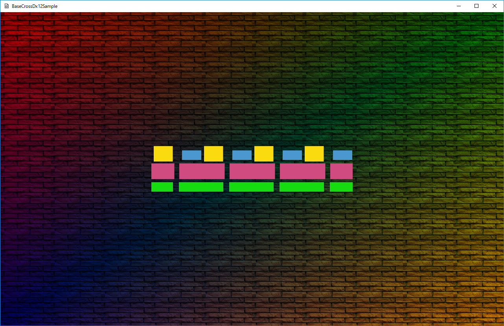

００８．頂点色とテクスチャの合成(Dx12版)
このサンプルは
SimplSample008というディレクトリに含まれます。
BaseCrossDx12.slnというソリューションを開くと
Dx12版が起動します。
実行結果は以下のような画面が出ます。

図0008a
動画は以下になります。
【サンプルのポイント】
今項のサンプルのポイントは
複数のシェーダによる、複数の描画のサンプルです。今項のサンプルには、シェーダは2種類含まれます。１つは前項までと同じ
VertexPositionTexture型を持ったオブジェクトの描画です。中心の流れるテクスチャですが、これは前項とかわりません。そしてあたらしく背景の壁に
VertexPositionColorTexture型の頂点を持ったオブジェクトを描画します。
これらを実装するのに
Dx12版と
Dx11版で実装方法を変えています。
Dx12版については、
描画クラスを階層的に作成し、それぞれの描画をそれらのクラスに任せます。
Dx11版については、それぞれのオブジェクトで、べたに描画します。
当然
Dx12版のような描画方法のほうが
オブジェクト指向なのですが、
Dx11版でも
Dx12版にならって描画クラスを作成してみると、勉強になると思います。
【共通解説】
Dx12、Dx11両方に共通なのは
シェーダーです。
DxSharedプロジェクト内に
シェーダファイルというフィルタがあり、そこに記述されてます。
今回使用するシェーダは
頂点シェーダとピクセルシェーダです。２種類のセットがあります。
VertexPositionTexture型の頂点を持つもの用と
VertexPositionColorTexture型のものです。
コンスタントバッファの2種類あります。
更新処理は動きは同じですが、Dx12版の
更新処理で説明します。
OnUpdate()関数には、それぞれの四角形を個別に更新する方法が記述されています。
【Dx12版解説】
BaseCrossDx12.slnを開くと、
BaseCrossDx12というメインプロジェクトがあります。この中の
Character.h/cppが主な記述個所になります。
■初期化■
Dx12版の初期化は
描画クラスで行います。今項のサンプルでは
描画クラスは階層化されています。すなわち
SpriteDrawクラスが親クラス。
PCTSpriteDrawクラスと
PTSpriteDrawクラスが子クラスの関係で、
描画クラスを構成します。
しかしながら、ほとんどの
Dx12リソースの初期化は親クラス側で行います。今回のオブジェクトの描画処理で違いがあるのは
コンスタントバッファと
パイプラインステートです。違いがあるといってもそんなに大きな違いがあるわけではありません。前者は
コンスタントバッファのサイズが違うだけで、後者は
シェーダと頂点データの型が違うだけです。ですので、コンスタントバッファについては
サイズをパラメータ化して初期化という方法が取れますし、後者は
テンプレートで型を渡す方法で親クラス側に初期化関数を持たせることができます。それらは
SpriteDraw::CreateConstantBufferBase()関数、
SpriteDraw::CreatePipelineStateBase()テンプレート関数という形で、親クラス側に実装されています。
■ルートシグネチャ作成■
ルートシグネチャは
SpriteDraw::CreateRootSignature()関数で行います。
シェーダリソースビュー、サンプラー、コンスタントバッファを持つルートシグネチャです。
■デスクプリタヒープ作成■
デスクプリタヒープは
SpriteDraw::CreateDescriptorHeap()関数で行います。前項と同じです。
■サンプラー作成■
SpriteDraw::CreateSampler()関数で行います。ラッピングサンプラーです。
■シェーダーリソースビュー作成■
SpriteDraw::CreateShaderResourceView()関数で行います。前項と同じです。
■コンスタントバッファ作成■
コンスタントバッファは親クラス側では
SpriteDraw::CreateConstantBufferBase()関数で行います。このクラスは引数に
コンスタントバッファのサイズを渡します。子クラス側でサイズを指定して、親クラス側の関数を呼び出します。
■パイプラインステート作成■
パイプラインステートは親クラス側では
SpriteDraw::CreatePipelineStateBase()テンプレート関数が用意されています。子クラス側で頂点型、シェーダ型を渡してこのテンプレート関数を呼び出します。
■コマンドリスト作成■
デフォルト処理です。
SpriteDraw::CreateCommandList()関数で行います。
■コンスタントバッファの更新■
子クラス側の
UpdateConstantBuffer()関数で行います。この関数は引数にコンスタントバッファの構造体を渡します。これは子クラスごとに違います。
■初期化のメカニズム■
これらの
DX12リソースの初期化を実装するのは、
SpriteDraw::OnCreate()関数です。
void SpriteDraw::OnCreate() {
//テクスチャの作成
m_TextureResource = TextureResource::CreateTextureResource(m_TextureFileName, L"WIC");
///各初期化関数呼び出し
///ルートシグネチャ作成
CreateRootSignature();
///デスクプリタヒープ作成
CreateDescriptorHeap();
///サンプラー作成
CreateSampler();
///シェーダーリソースビュー作成
CreateShaderResourceView();
///コンスタントバッファ作成
CreateConstantBuffer();
///パイプラインステート作成
CreatePipelineState();
///コマンドリスト作成
CreateCommandList();
}
ここで呼び出している関数のうち、
CreateConstantBuffer()とCreatePipelineState()は純粋仮想関数になってます。ということは子クラス側の関数を呼びだすわけですが、子クラス
PCTSpriteDrawの
CreateConstantBuffer()は以下のようになってます。
void PCTSpriteDraw::CreateConstantBuffer() {
CreateConstantBufferBase(sizeof(SpriteConstantBuffer));
}
子クラス
PTSpriteDrawの
CreateConstantBuffer()は以下のようになってます。
void PTSpriteDraw::CreateConstantBuffer() {
CreateConstantBufferBase(sizeof(DiffuseSpriteConstantBuffer));
}
つまり、
コンスタントバッファのサイズが違うだけなので、引数を変えて親クラスの関数を呼び出すわけです。
CreatePipelineState()の子クラス側の関数は、
void PCTSpriteDraw::CreatePipelineState() {
CreatePipelineStateBase<VertexPositionColorTexture, VSPCTSprite, PSPCTSprite>();
}
と
void PTSpriteDraw::CreatePipelineState() {
CreatePipelineStateBase<VertexPositionTexture, VSPTSprite, PSPTSprite>();
}
という形です。どちらもそれぞれの頂点型とシェーダクラスを渡しています。このように
親クラスから純粋仮想関数を呼び出し、子クラスでは親クラスの関数を呼び出すというテクニックは、子クラスごとの実装の違いを分けるのに便利です。
■更新処理■
初期化はもっぱら
Dx12リソースの初期化ですが、更新は、各配置されるオブジェクトの更新です。今項では、中央の流れるテクスチャのクラス
SquareSpriteの
頂点UV値の変更が更新処理です。
SquareSprite::UpdateVertex()関数です。この処理は前項と変わりません。
■描画処理■
描画は
描画クラスの
DrawObject()関数で行います。描画する前にコンスタントバッファを更新します。
以上、Dx12側の説明は終わりです。
【まとめ】
今回は
シェーダの違うオブジェクトを同居させる場合の、ヒントになるようなサンプルになってます。表現は前項とほぼ同じなので、比べてみると違いが判ると思います。
また、ここで知ってほしいのは
プログラム実装は一通りではないということです。描画処理１つとっても、クラスの設計や関数の書き方で、効率の良しあしが決まります。せっかくC++という自由度が高い言語を扱っているので、テンプレート、仮想関数など。C++の機能をふんだんに使って実装を試みましょう。